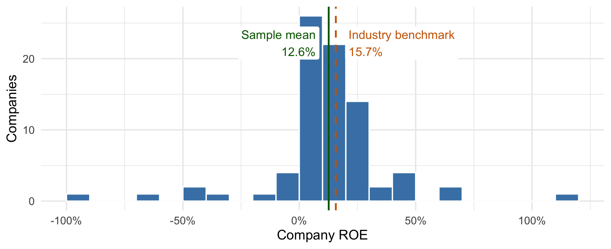
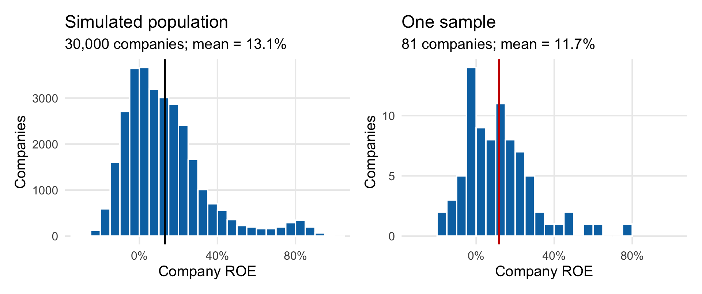
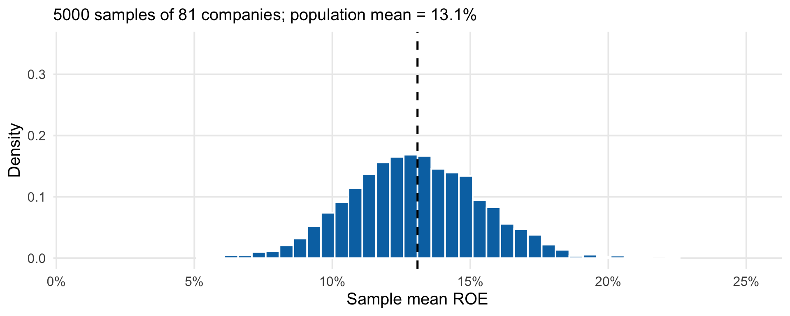
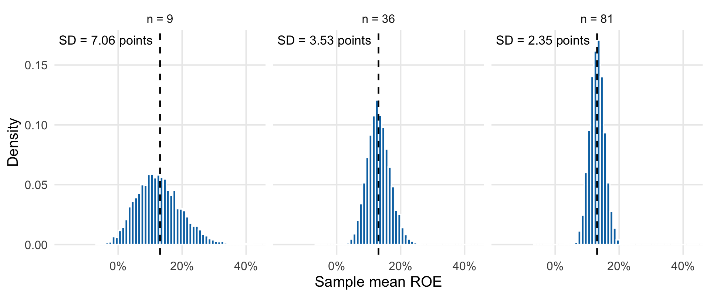
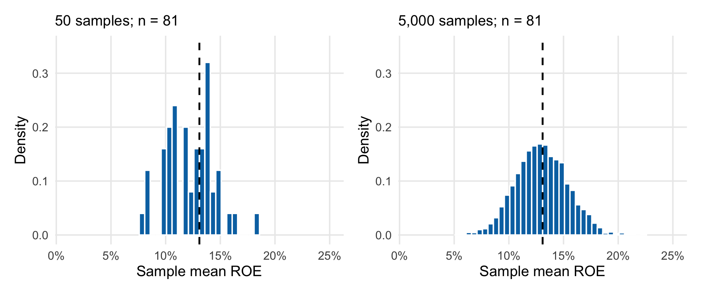
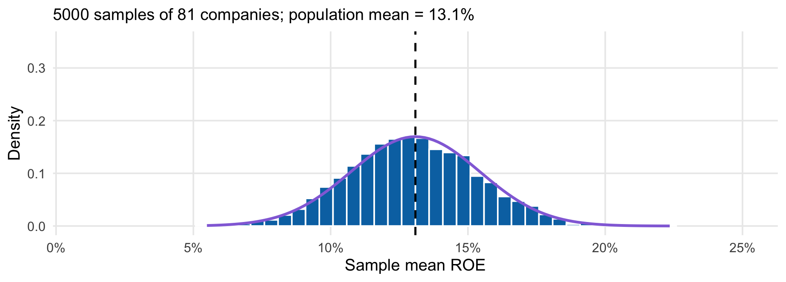
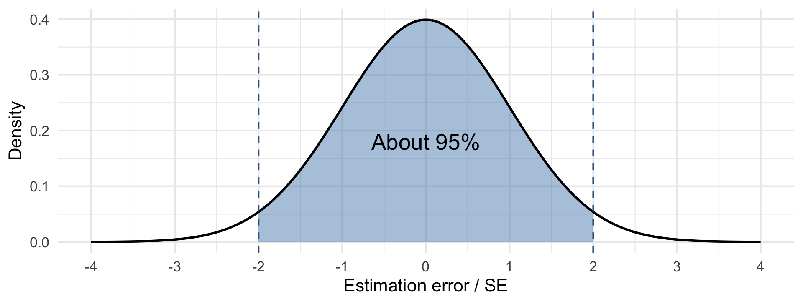
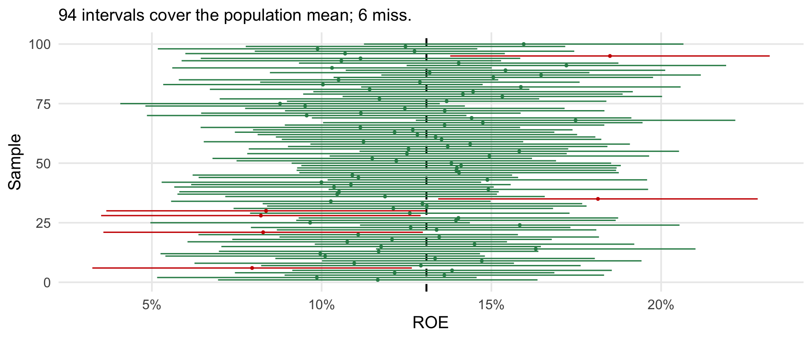
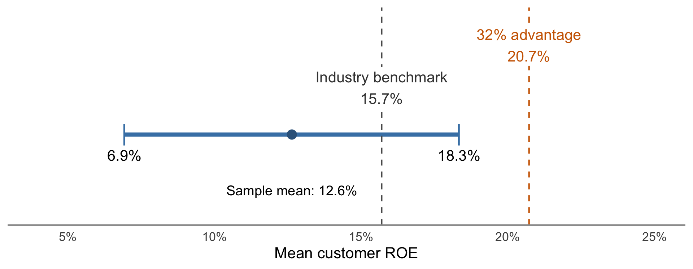

Sampling Distributions and Confidence Intervals
TEMBA Statistics 2026
SAP’s profitability claim
SAP advertised that its customers were 32% more profitable than their peers.
Nucleus Research examined 81 publicly traded customers listed on SAP’s website.
Their measure was return on equity (ROE): annual profit as a percentage of shareholder equity.
The sample points in the other direction
| 81 SAP customers |
12.6% |
| Their industry benchmarks |
15.7% |
The sample gap is 3.1 percentage points.
Could sampling variation explain it?
Company ROEs vary widely

The sample SD is 25.7 percentage points.
Is 81 too small?
SAP objected: 81 firms out of roughly 30,000 customers is only 0.27%.
What determines how much the sample average varies?
A random-sampling model
Model the 81 company ROEs as iid draws from the customer population.
Each customer is equally likely on each draw.
Website selection may violate this model.
Parameter, estimator, and estimate
| Parameter |
\(\mu\): mean ROE of all SAP customers. |
| Estimator |
\(\bar X\): the rule for averaging a random sample. |
| Estimate |
\(\bar x=12.6\%\): the result from these 81 firms. |
Which would change with a new sample?
A population and one sample

This is a simulated population, so we know its mean.
Take repeated samples
Open the sampling explorer
Set \(n=81\). Take three samples, one at a time.
What does one observation represent in each panel?
The sampling distribution of the mean

It describes how the sample mean varies across random samples of the same size.
Compare sample sizes
| A |
9 |
1,000 |
| B |
36 |
1,000 |
| C |
81 |
1,000 |
Predict the center and spread before running the app.
Larger samples give less variable averages

The population stays fixed; each panel uses 5,000 samples.
Simulation repetitions

More repetitions improve our picture of the same sampling distribution.
The sample mean’s center and spread
For iid draws with mean \(\mu\) and finite variance \(\sigma^2\),
\[
E[\bar X]=\mu,\qquad
\operatorname{SD}(\bar X)=\frac{\sigma}{\sqrt n}.
\]
These are the same rules we used for average project profit.
Standard error
The standard error is the SD of an estimator’s sampling distribution.
\[
SE(\bar X)=\frac{\sigma}{\sqrt n}.
\]
For the sample mean under iid sampling, it measures the typical size of estimation error.
Estimate SE from the sample
The population SD \(\sigma\) is unknown. Use the sample SD \(s\):
\[
\widehat{SE}(\bar X)=\frac{s}{\sqrt n}.
\]
This estimates how much sample means vary across repeated samples.
Individual times and averages
Delivery times are iid, with population SD 12 minutes.
Compute the SE of the mean for samples of 100 and 400 orders.
Which spread changes? Which stays at 12 minutes?
Larger samples improve precision
| 100 |
\(12/\sqrt{100}=1.2\) minutes |
| 400 |
\(12/\sqrt{400}=0.6\) minutes |
Individual delivery times still have SD 12 minutes.
A normal approximation for the mean

\[
\bar X\approx N\!\left(\mu,\frac{\sigma^2}{n}\right).
\]
Estimation error
Subtract the fixed population mean:
\[
\bar X-\mu\approx N\!\left(0,\frac{\sigma^2}{n}\right).
\]
The errors are centered at zero and have SD \(\sigma/\sqrt n\).
We cannot calculate our actual error because \(\mu\) is unknown.
In about 95% of random samples, the sample mean is within two SEs of \(\mu\)

This uses the normal approximation for estimation error.
Turn the distance into an interval
\[
|\bar X-\mu|\leq 2\,SE
\]
is the same event as
\[
\bar X-2\,SE\leq\mu\leq\bar X+2\,SE.
\]
Centering the interval on \(\bar X\) captures \(\mu\) in about 95% of samples.
A confidence interval for the mean
A confidence interval gives plausible values for the population mean.
With an adequate normal approximation and an estimated SE, use
\[
\bar x\ \pm\ 2\frac{s}{\sqrt n}.
\]
This is an approximate 95% confidence interval under the sampling model.
Calculate a delivery-time interval
An iid sample of 100 orders has:
| Mean |
42 minutes |
| SD |
12 minutes |
Assume the normal approximation is adequate.
A true mean above 45 minutes would trigger a costly process review.
Find the estimated SE and an approximate 95% interval for the population mean.
Plausible mean delivery times
\[
\widehat{SE}=\frac{12}{\sqrt{100}}=1.2\text{ minutes},
\]
\[
42\pm 2(1.2)=[39.6,\ 44.4]\text{ minutes}.
\]
Does this audit support triggering that review?
Plan the next audit
Use 12 minutes as the planning value for the population SD.
How many deliveries would give a two-SE margin of error of 1 minute?
\[
2\frac{12}{\sqrt n}=1
\]
Solving gives \(\sqrt n=24\), so the audit needs 576 deliveries.
Watch intervals cover or miss
Open the sampling explorer
Set \(n=81\) and show the approximate 95% confidence interval.
Out of 1,000 intervals, roughly how many should contain \(\mu\)?
Coverage across samples

The app uses its known population SD. Only the interval centers move.
The 95% describes the procedure
About 95% of intervals from this procedure contain \(\mu\) under the model.
The population mean stays fixed; the samples and intervals change.
Our one interval either contains \(\mu\) or misses it.
Calculate the SAP interval
| Number of firms |
81 |
| Mean ROE |
12.6% |
| SD of ROE |
25.66 percentage points |
Estimate the SE and construct an approximate 95% interval for mean customer ROE.
SAP’s interval
\[
\widehat{SE}=\frac{25.66}{\sqrt{81}}
\approx 2.85\text{ percentage points}.
\]
\[
\bar x\pm2\widehat{SE}\approx
[6.9\%,\ 18.3\%].
\]
These are plausible population means under the random-sampling model.
Compare the claims with the interval

Treating the industry benchmark as fixed, which claims fit this interval?
A mean near 7% would be much worse than Nucleus claimed, and it also fits.
How were the firms selected?
Nucleus used publicly traded firms listed on SAP’s website.
They may differ from SAP’s other customers.
The interval measures sampling variation under the model. It does not correct selection bias.
Report what the data support
Speak for Nucleus, SAP, or an independent analyst.
Use the interval and identify one limitation.
Then write a one-sentence conclusion about mean customer ROE.
Review questions
What does standard error measure?
How must sample size change to halve the SE of a mean?
What is one defensible conclusion from the SAP interval?